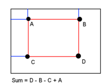

1. Introduction
Integral Image or Summed-area table is a data structure and algorithm for quickly and effiently generating the sum of values in a rectangular subset of a grid.
An integral image is created to store integral value at every position (x,y). The value at any point (x, y) is the sum of all the pixels to the left top of (x, y).
\[Integral(x,y)=\sum_{x^{'}<{x}, y^{'} <{y}}I(x^{'}, y^{'})\]
The integral value can be computed more efficiently.

\[Integral(x,y)=I(x,y) + Integral(x, y - 1) + Integral(x - 1,y) - Integral(x -1, y-1)\]
After finish calculating the integral image, summation of arbitrary rectangular area can be computed from 4 corners.
\[sum(ABCD)=Integral(D) + Integral(A) - Integral(B) - Integral(C)\]
Integral histogram is similar with integral image but having 256 channel value per pixel (8-bit image).
Moreover, this method can be extended to quickly calculate variance or standard deviation of a block.
\[Var(ABCD)=\frac{1}{W * H}\sum_{x, y}(I(x,y) - \mu)^{2}=\frac{1}{W*H}\sum_{x,y}(I^{2}(x, y) - 2*{\mu}*{I(x,y)} + {\mu}^{2})=\frac{1}{W*H}(\sum_{x,y}I^{2}(x, y) - 2*{\mu}*\sum_{x,y}{I(x,y)} + \sum_{x,y}{\mu}^{2})=\frac{1}{W*H}(\sum_{x,y}I^{2}(x, y) - 2*{\mu}*\sum_{x,y}{I(x,y)} + (W*H)*{\mu}^{2})\]
Where \(\sum_{x,y}I^{2}(x, y)\) can be obtained by integral of square pixel value
2. Experiment
3. References